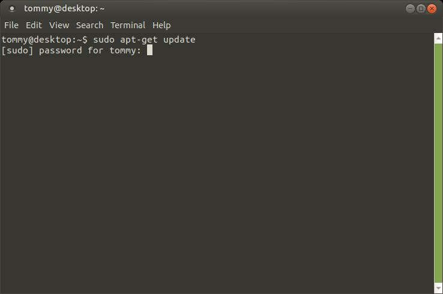
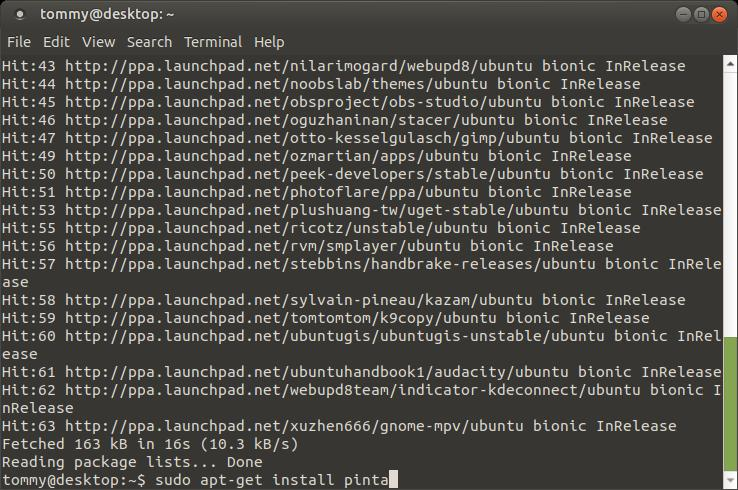

Getting Started¶
Download the correct installation file for your system from the Downloads page on the Pinta Project Release site.
Windows¶
Considering that there are some minor differences between each Windows system, this instruction will encompass all versions of Windows since there's one core way to install and uninstall.
Install¶
- Double-click on the file to run the installation wizard.
- Follow the instructions on the wizard.
- Click
Finishto close the installation wizard.
Uninstall¶
- Click on the Start Menu.
- Type "Control Panel" and hit
Enter. - Change the "View By" to
Small Icons. - Click on Programs and Features.
- Scroll down the list to find Pinta.
- Select Pinta and click to Uninstall in the toolbar above.
- Follow the instructions of the wizard.
- Click
Finishto close the uninstallation wizard.
Mac¶
Install¶
- Double-click on the file to run the installation.
- Drag the Pinta icon to your Applications folder in the Finder window.
- Click on the red button at the top-left corner to close the Finder window.
Uninstall¶
- Click on the Finder at the bottom toolbar.
- Navigate to the Applications folder and select Pinta.
- Move to Trash in three different ways:
- Drag the Pinta icon to the Trash at the bottom-right corner.
- Right-click on Pinta and select “Move to Trash”.
- Select Pinta and press the shortcut
Command+Deleteon your keyboard.
- Right-click on the Trash can and select “Empty Trash”.
Linux¶
Install¶
Recommended for Ubuntu/Ubuntu MATE 18.04
- Press the shortcut
Ctrl+Alt+Ton your keyboard to open the Terminal. - Type the following command:
sudo apt-get update. - Press
Enteron your keyboard. - Type in your computer user password.
 - Type the following command:
sudo apt-get install pinta. - Press
Yand pressEnteron your keyboard.
 - Close the Terminal.
You may also download and install the program via the .deb file: pinta_1.6-2_all.deb.
Uninstall¶
- Press the shortcut
Ctrl+Alt+Ton your keyboard to open the Terminal. - Type the following command:
sudo apt-get remove pinta. - Close the Terminal.